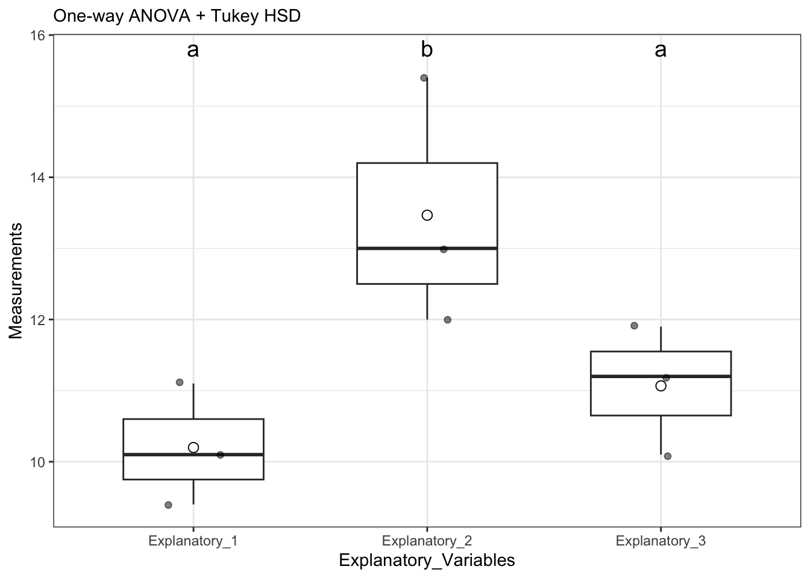
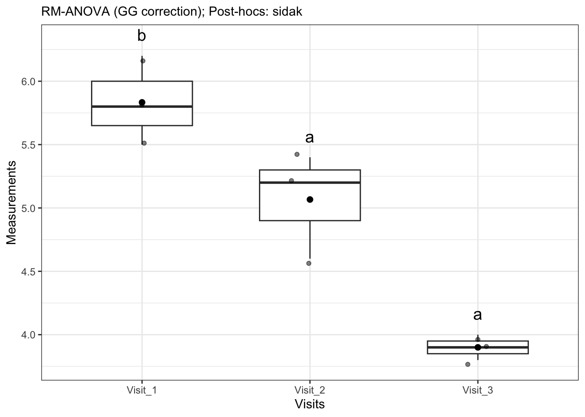

Previously, we discussed one-way ANOVAs, where we are looking at a single factor split across three or more groups and trying to determine if the means of these groups are equal (i.e., \(H_0: \mu_1=\mu_2=...\mu_i\)). ANOVA specifically allows us to analyze the variance of these different groups to ascertain which factors are most responsible for the variation we observe in the data. Because of the way ANOVA operates, we can actually test multiple different combinations of variables simultaneously in what we call a two-way ANOVA.
Don’t forget to load your required packages - tidyverse and UNKstats!
13.2 Designs
There are several different designs for two-way ANOVAs, and we will cover some of the most common designed here.
For these examples, we are going to randomly generated examples. I will refer to the variables as Response and Explanatory for simplicity’s sake.
13.2.1 Randomized block design
Randomized block designs look at combinations of variables that could be affecting the results. More specifically, we are looking at two strata or factors and their effects on a continuous response variable.
set.seed(8675309)# random example# Blocking variableBlocking_Variable <-c("Group 1", "Group 2", "Group 3")# explanatory variables# these are your columns# these are your primary hypothesisExplanatory_1 <-c(10.1, 9.4, 11.1)Explanatory_2 <-c(12, 13.0, 15.4)Explanatory_3 <-c(11.2, 10.1, 11.9)# create "data table" as we normally see it# combine all columnsdata_expanded <-cbind(Blocking_Variable, Explanatory_1, Explanatory_2, Explanatory_3) |>as.data.frame() # create data framedata_expanded
Blocking_Variable Explanatory_1 Explanatory_2 Explanatory_3
1 Group 1 10.1 12 11.2
2 Group 2 9.4 13 10.1
3 Group 3 11.1 15.4 11.9
Note that this table is in the format that we most often see, but we need to reshape these data to make it easier for us to perform our analyses. I created the data here as a matrix with named columns and rows; the following code may need to be adjusted if you do things differently.
# expand to "long" format# if not done earlier, convert to data framedata <- data_expanded |># !by column for aggregating# names_to = what to name column aggregation# values_to = what the measurements should be calledpivot_longer(!Blocking_Variable, names_to ="Explanatory_Variables", values_to ="Measurements")data[["Measurements"]] <-as.numeric(data[["Measurements"]])
Now we can do our ANOVA. Note that I put factor around the blocking variable.
# mark block by factor# best to always usedata_aov <-run_oneway(data = data, dv ="Measurements", group ="Explanatory_Variables", blocking ="Blocking_Variable", parametric = T)data_aov$anova_table
# A tibble: 3 × 6
term df sumsq meansq statistic p.value
<chr> <int> <dbl> <dbl> <dbl> <dbl>
1 Explanatory_Variables 2 17.2 8.59 14.4 0.0149
2 Blocking_Variable 2 6.83 3.41 5.73 0.0670
3 Residuals 4 2.38 0.596 NA NA
data_aov$plot

In this particular example, the blocking variable does not significantly differ, however the explanatory variable does differ.
Remember, the columns represent your primary hypothesis. You will only plot your results if your primary hypothesis is significant!
Given that our primary null hypothesis is rejected (that is to say, not all means are equal), we need to plot our results.
13.2.2 Repeated measures
Now, we are going to do a repeated measures ANOVA, where we have the same individuals being measured multiple times. Consider the following imaginary dataset:
We need to perform the ANOVA again, but we need to account for the factor of which locations are repeated.
repeated_aov <-run_rm(data = data, dv ="Measurements", id ="Individuals", within ="Visits", which_within ="Visits")repeated_aov$anova_table
Effect df MSE F pes p.value
1 Visits 1.31, 2.61 0.05 89.79 ** .978 .004
repeated_aov$plot

13.2.3 Factorial ANOVA
Mathematically, a factorial ANOVA is the same as a randomized block ANOVA; please see that section for information on how to run this test.
13.2.4 ANOVA with interaction
Sometimes when we running a model, we want to look for interactive effects. Interactive effects are situations where one (or both) variables on their own do not effect the data, but there is a cumulative effect between variables that effects things. Let’s look at an example, based on our initial example but with the data altered.
set.seed(8675309)# we are using data from the randomized black ANOVA againdata_expanded
Blocking_Variable Explanatory_1 Explanatory_2 Explanatory_3
1 Group 1 10.1 12 11.2
2 Group 2 9.4 13 10.1
3 Group 3 11.1 15.4 11.9
### YOU DO NOT NEED TO DO THIS### CREATING DATA FOR EXAMPLEdata_expanded$Explanatory_1 <-as.numeric(data_expanded$Explanatory_1)data_expanded$Explanatory_2 <-as.numeric(data_expanded$Explanatory_2)data_expanded$Explanatory_3 <-as.numeric(data_expanded$Explanatory_3)# create some pseudorandom data# [,-1] excludes first column - group datadata_expanded2 <-cbind(Blocking_Variable, data_expanded[,-1] -0.75)data_expanded3 <-cbind(Blocking_Variable, data_expanded[,-1]*1.05)data_expanded <-rbind(data_expanded, data_expanded2, data_expanded3)# expand to "long" formatdata <- data_expanded |># convert to data frameas.data.frame() |># !by column for aggregating# names_to = what to name column aggregation# values_to = what the measurements should be calledpivot_longer(!Blocking_Variable, names_to ="Treatments", values_to ="Measurements")
# specifying factor to be safeinteractive_aov <-run_twoway(data = data, dv ="Measurements", factor_a ="Treatments", factor_b ="Blocking_Variable", include_interaction =TRUE, which_factor ="Treatments:Blocking_Variable")
Contrasts set to contr.sum for the following variables: Treatments, Blocking_Variable
Note: adjust = "tukey" was changed to "sidak"
because "tukey" is only appropriate for one set of pairwise comparisons
Friedman’s test is a non-parametric alternative to a two-way ANOVA, so as you would guess, it can be painful to implement. We will use an altered version of the same test we’ve used before:
# set seed - make reproducibleset.seed(8675309)### DO NOT NEED TO REPEAT THIS### CREATING DATA FOR EXAMPLE # new set of foods - this time, ten of themTreatments <-c(paste("Treatment",1:10)) |>as.factor()# pre-created data frame of locations from earlierBlocking_Factor <-c(paste("Block", 1:10)) |>as.factor()long_data <-crossing(Blocking_Factor, Treatments)long_data$Measurements <-NAfor(i in1:length(unique(long_data$Treatments))){ subset_rows <-which(long_data$Treatments==long_data$Treatments[i]) long_data$Measurements[subset_rows] <-runif(n =length(subset_rows),min = i-2, max = i+2) |>round(1)}long_data
Now that we have our expanded and randomized table, we can get started with our test.
Our calculation for the Friedman’s test statistic \(Q\) (not to be confused with Tukey’s \(q\)!) is: \[Q = \frac{12}{nk(k+1)} \cdot \Sigma R_j^2 - 3n(k+1)\]
where \(n\) is the total number of individuals in each sample in the dataset, \(k\) is the number of groups, and \(R_j^2\) is the sum of the ranks.
As we can see, some pairs are inseparable and others are separable. We can now plot as for the other problems.
13.4 Homework: Two-way ANOVA
This homework requires you to install tidytuesdayR.
For each question:
State your null and alternative hypotheses
There will be a hypothesis for each thing being tested - primary hypothesis, secondary hypothesis (or blocking variable), and interaction if tested
Justify what type of ANOVA you think this is and why
Randomized Block / Factorial ANOVA (run_oneway with blocking indicated)
Interactive ANOVA (run_twoway)
Two-way ANOVA (run_twoway)
Repeated Measures ANOVA
Test for normality relative to the primary hypothesis only. Do not transform problems that tell you to ignore normality requirements.
Perform the appropriate ANOVA
Interpret the results and provide a conclusion
Focus on your primary hypothesis, and then address your secondary hypothesis if needed
If there is an interaction, focus on the interaction
If there are any additional questions within the problem, be sure to address them
13.4.1 Question 1: Stat-y Spice
You and your friends are jamming out to the Spice Girls, like you do every Tuesday night, when you get into a heated debate about which of their songs are the most danceable. Amidst all the bickering, you make out that some of your friends are fixated on the year the song came out, while others are arguing that they have more success making “bangers” in major keys than they do in minor keys. In order to save your friend group from infighting, you decide to perform a two-way ANOVA on release year and whether the song is in a major or a minor key and how those factors affect danceability.
You answer should find that there is an effect of year (\(F_{2,25} = 4.42\), \(p = 0.02\)), major/minor key (\(F_{1,25} = 10.23\), \(p = 0.004\)), and an interaction between the two (\(F_{2,25} = 4.37\), \(p = 0.02\)).
13.4.2 Question 2: All alone…
You and your study group are binge-watching the TV show Alone while studying for your history final (it is on the History channel, so it has to help somehow, right?). One of your buddies says that the show is inherently unfair, because men are better at survival techniques than women are. This rubs you the wrong way, so you want to see if there is any merit to his claims. You decide to analyze the number of days people are able to last in the show, divided by gender. You also realize that there are cultural differences between countries, so you want to account for any error due to cultural background when you perform your test.
NOTE: if you cannot transform this to normal, just run the test on the data “as is”.
There is not a significant effect of gender or country, with \(p = 0.09\) for both.
13.4.3 Question 3: Penguins (not of Madagascar)
Talking to Dr. Cooper after class about niche ecology, you become fascinated by the idea of similar species having morphological differences to allow them to co-occur in different areas. You decide to see if there are any morphological differences between penguin species on Antarctic islands. You decide to examine populations of thee congeneric penguins that are regionally sympatric: Adelie Penguin Pygoscelis adeliae, Chinstrap Penguin P. antarcticus, and Gentoo Penguin P. [papua] ellsworthi. You anticipate that there will be differences in bill length among species, but you also know that there is intraspecific competition within species because you did not fall asleep in your evolution class and know that this may also have an effect on bill lengths. In your conclusion, be sure to state which groups are (or are not) different.
HINT: the intraspecific variation should be accounted for by a column in the dataset that shows variation within each species by some categorical measure.
There is a significant effect of species (\(F_{2,327} = 650.21\), \(p < 0.001\)) and the intraspecific variable (\(F_{1,327} = 208.06\), \(p < 0.001\)).
13.4.4 Question 4: Mankind’s biggest foe
Mosquitoes kill more people than any other animal every year. One of the ways in which humans die from mosquitoes is by infecting them with malaria. While malaria has been largely eradicated in North America, it still persists in the Caribbean, Central America, and South America. You are curious if mortality rates have been consistent between years within the Americas, or if there have been any “outbreak” years.
Load the malaria dataset below, and:
Filter for the entity of Andean Latin America, Caribbean, Central Latin America, Southern Latin America, and Tropical Latin America.
Filter only for years that are 2012 or more recently.
Compare malaria deaths by country, taking into account that year may also be a source of variation for deaths (i.e., via outbreaks).
These data are non-normal, but for the purposes of this problem, perform a standard ANOVA on the non-transformed data.
It is well known that male driver insurance costs more than female’s - but did you know those who live in urban areas also pay more? You want to see if these trends translate to incarceration rates as well, to truly be able to tell if males are “Bad Guys”.
Load the pretrial dataset below, and:
Filter for the male and female populations to exclude total incarceration rates
Compare incarceration rates between male and female populations, and determine if urbanicity plays a role in incarceration rates between these two populations.
These data are non-normal, but for the purposes of this problem, perform a standard ANOVA on the non-transformed data. Provide a potential explanation as to why this data is not normal.
There is an effect of sex (\(F_{1,360} = 583.65\)), urbanicity (\(F_{3,360} = 8.68\)), and the interaction between the two (\(F_{3,360} = 6.05\)). All \(p < 0.001\).
13.4.6 Question 6: Your turn!
Using datasets from tidytuesdayR (viewable here) or a different dataset of your choosing, create your own two-way ANOVA homework problem.
You are allowed to work with others, but you must say who you worked with if you do. Please keep group sizes ≤ 4.
Your problem must include a worked through “key” showing how the homework problem should be done based on the prompt.
I want you to do a good faith effort at this problem; if you get stuck or cannot figure out how to get a problem to work, show which datasets you tried to use and where you might get homework data in the future if these don’t work.